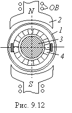

Магнитный поток МДПТ с полым якорем создаётся обмоткой возбуждения ОВ (рис. 9.12). Якорь  представляет
собой полый стакан 1, расположенный между полюсами статора 2 и неподвижным
ферромагнитным сердечником 3. Обмотку якоря укладывают на цилиндрический
каркас (стакан) и заливают эпоксидной смолой. Концы секций обмотки соединяют с
пластинами коллектора 4. Момент инерции полого якоря невелик, благодаря
чему существенно повышается быстродействие МДПТ.
Так как секции обмотки якоря окружены воздухом, а не ферромагнитным материалом, как у МДПТ с обычным якорем, то обмотка якоря имеет гораздо меньшую индуктивность. Это существенно улучшает условия эксплуатации двигателя, что в свою очередь увеличивает срок службы щёток и повышает стабильность выходной характеристики
n = f(Uу).
Недостатком МДПТ с полым якорем является необходимость значительного увеличения МДС обмотки возбуждения, так как воздушный зазор у них гораздо больше, чем у обычных ДПТ. Последнее приводит к некоторому увеличению массы, габаритных размеров машины и потерь мощности в обмотке возбуждения. Однако КПД МДПТ с полым якорем имеет примерно такую же величину (η = 0.3...0.45 в двигателях мощностью 1...15 Вт), как и МДПТ с якорем обычной конструкции.